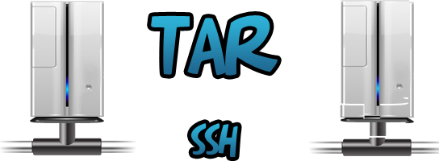

Oct 2, 2010 · 3 minute read · Comments
Hobbies

Cuando uno llega agotado a casa es posible que no tenga ánimos de ver algo demasiado complejo, leer un libro profundo ni nada que suponga un esfuerzo extra. Para esos días, las comedias son un remedio estupendo, por eso y varias recomendaciones de amigos me zampé la primera temporada completa de Community. En las líneas que siguen, una breve opinión sobre esta serie de creciente éxito de la NBC.
Community nos lleva a la completamente lamentable Universidad de Greendale en la que convergen personajes de lo más variopinto. Como protagonista tenemos a Jeff, abogado sin escrúpulos hasta que descubrieron que su título era falso y ahora debe conseguir el verdadero. Britta, es típica chica independiente que Jeff tratará de atrapar por todos los medios (aunque éstos sean poco éticos). Pierce es un jubilado prepotente, racista y algo homófobo casado y divorciado en 7 ocasiones. Troy era el típico campeón de fútbol en el instituto que ahora, venido a menos, no se encuentra cómodo en la Universidad. Abed es un adicto a películas y series de TV capaz de convertir y relacionar cualquier suceso de “la realidad” con un momento de ficción. Shirley es una ama de casa muy católica que no tuvo la oportunidad de estudiar. Finalmente, Annie, la más joven del grupo, es una ex-adicta a pastillas traumatizada por su paso por el instituto.

Esta colección tan estrambótica se verá obligado a colaborar en forma de grupo de estudio para aprobar las clases de español con el temible Señor Chang. Community no pretende ser una serie razonable ni realista, es una hipérbole de personalidades que chocan y explotan. Situaciones absurdas, extremas pero, sobretodo, geniales e hilarantes. Sabemos que dista mucho de la realidad pero lo aceptamos sin rechistar. Destaca por encima de todo la ausencia de las ridículas risas enlatadas que tanto fuerzan las situaciones. Tendremos que enfrentarnos a silencios incómodos y una pequeña ración de esa vergüenza ajena tan divertida que tienen las series cómicas británicas.
Me encanta que la serie se ría de sí misma por medio de Abed, el seriéfilo. El que considero uno de los mejores personajes cómicos en mucho tiempo, siempre señala con el dedo los clichés haciendo constantes referencias al cine de forma que rompe con el monótono ritmo que llevarían otras producciones.

Es posible que le cueste arrancar, es algo que he leído y escuchado de otros compañeros pero el que tenga paciencia durante los tres primeros episodios no se arrepentirá. Vienen en dosis de 20 minutos y eso se agradece, tanto que ya voy a catar la segunda temporada que acaba de comenzar. Si crees que series como la excepcional “How I met your mother” están algo quemadas puede que necesites algo nuevo, Community es de tus mejores opciones.
Oct 1, 2010 · 2 minute read · Comments
Computing

La administración de sistemas no es una de mis pasiones pero en mi trabajo actual tengo que ejercer dicha actividad combinada con el desarrollo web. Hace unas semanas tuvimos que actualizar una aplicación web que manejaba un volumen bastante importante de datos. A pesar de que se hacían copias incrementales diarias utilizando rsync estimamos oportuno hacer una copia completa y colocarla en una máquina distinta por si la ley de Murphy decidía darnos una lección. El texto que sigue es un truco para hacer una copia gigantesca y mandarla mediante ssh a otra máquina sin perder demasiado el tiempo.
La respuesta rápida (y cutre)
Comprimir 200GB con tar y transferirlos vía ssh es extremadamente lento aunque las máquinas estén en la misma subred. Este sería el enfoque inicial:
# Comprimimos
tar cvzf directorio directorio.tar.gz
# Enviamos
scp directorio.tar.gz usuario@host:directorio_destino
La solución
Decidimos que el tiempo era oro, máxime cuando el backup y la actualización implicaban cortar el servicio a todos los usuarios. Lo ideal sería ir enviando datos a medida que éstos se van comprimiendo. Un poco de búsqueda en Google y retoque de parámetros para ajustarlo a nuestras necesidades bastaron para ahorrar prácticamente la mitad de tiempo. A continuación el script que encierra la magia (obviando datos concretos):
#!/bin/sh
# Fecha de la copia
FECHA=$(date +"%F-%H-%M-%S")
# Directorio a copiar
DIR_BACKUP=/home/david
# Máquina remota
HOST=backups.saltares.com
# Usuario de la máquina remota
USER=siondream
# Directorio destino
HOST_DIR=/home/siondream/backups
# Hacemos el backup
tar cvzf - $DIR_BACKUP | ssh $USER@$HOST "cat > ${HOST_DIR}/${DIR_BACKUP}-${FECHA}.tar.gz"
Con el clásico tar cvzf tenemos una compresión común de $DIR_BACKUP. No obstante, el guión – sirve para desviar el flujo a la salida estándar la cual convertimos en la entrada estándar del siguiente comando mediante la tubería |. El chorro de bytes se envía mediante ssh (al equipo $HOST con nuestro usuario $USER) y se vuelca en el fichero $DIR_BACKUP-$FECHA.tar.gz utilizando cat. Puede parecer algo confuso pero si lo piensas es maravilloso y tiene todo el sentido del mundo.
Lo mismo casi en la mitad de tiempo
Si tienes que hacer grandes copias y enviarlas por la red, este pequeño truco es tu amigo. Tras completar el proceso de actualización con éxito hice algunas pruebas para calcular la mejora que proporciona esta técnica. Obtuve resultados impresionantes: enviar los datos mientras éstos se comprimen lleva casi la mitad de tiempo que hacerlo en etapas separadas.
Sep 26, 2010 · 3 minute read · Comments
Computing

Cuando trabajamos no es extraño tener varias ventanas abiertas: navegador, documentación, código y cliente de Twitter (¡ejem!). Cambiar constantemente de ventana puede ser un suplicio por lo que muchos optan por utilizar dos pantallas conectadas a su equipo. Menos usual pero igualmente posible es tener que manejar dos ordenadores al mismo tiempo, por ejemplo, el equipo de trabajo y el de pruebas. En tal caso tu mesa puede convertirse en un verdadero caos con tanto teclado y ratón estorbando, la solución es Synergy. A continuación, un sencillo tutorial de instalación y configuración.
La solución es Synergy
Synergy es una aplicación open source (GPL) que nos permite compartir teclado y ratón entre dos o más equipos. Incluso es posible hacerlo entre aquellos con distinto sistema operativo instalado (GNU/Linux, Windows y Mac). QuickSynergy es una GUI para Synergy, también libre, que facilita su configuración y uso. Mi antiguo compañero de trabajo lo utilizaba y me mostró sus ventajas, ahora que me estoy acostumbrando noto una gran mejoría en comodidad y rapidez. Presten atención a los siguientes pasos para poner en marcha todo este tenderete.
Hay que distinguir entre dos conceptos:
- Servidor: equipo que comparte el teclado y el ratón con los clientes. Sólo tendremos un servidor.
- Cliente: equipo que recibe la señal de teclado y ratón del servidor. Podemos tener varios clientes conectados a un servidor.### Instalación
En el servidor vamos a instalar QuickSynergy mientras que en los clientes sólo necesitamos Synergy (aunque también podemos instalar el pack completo. En sistemas no basados en Debian será necesario descargar y compilar el código (en su forja de Google Code), pero en el resto podemos hacer:
# Instalamos Synergy + QuickSynergy
sudo apt-get install quicksynergy
# Instalamos Synergy
sudo apt-get install synergy
Configuración y uso
El primer paso es poner el servidor en marcha para que comience a enviar la señal. Para ello, abrimos QuickSynergy y nos centraremos únicamente en la pestaña “Share” (compartir). Los pasos son tremendamente sencillos:
1. Elegimos la posición del cliente con respecto al servidor (arriba, abajo, izquierda o derecha). 2. Introducimos la dirección IP o nombre de host del cliente. 3. Hacemos click en “Execute”.

Si el cliente está encendido y no tenemos fácil acceso a su teclado y ratón podemos activar Synergy a través de SSH y todos tan contentos:
ssh usuario@host "synergyc –name nombreHost ipServidor"
En cambio, si preferimos utilizar QuickSynergy para configurar el cliente será necesario acudir a la pestaña “Use”. Introducimos la IP del servidor y hacemos click sobre “Execute”.

Reputación++
Listo, ahora es posible compartir teclado y ratón entre varios equipos con lo que nuestro estatus como informático profesional habrá ganado enteros. Seremos aclamados y mereceremos el respeto y temor de todos nuestros compañeros.

Sep 25, 2010 · 3 minute read · Comments
Projects

Tiny Backup es una pequeña interfaz para algunas de las funcionalidades del comando dpkg que permite a usuarios de GNU/Linux realizar y restaurar copias de la lista de paquetes instalados en el sistema. Está desarrollado en Python utilizando PyGTK y Glade para la GUI aunque de eso ya hablé suficiente en el artículo que le dediqué hace algo más de un mes. En este pequeño escrito hablaré de la acogida de la primera versión y de los arreglos que incorpora la segunda.
La recepción de Tiny Backup 0.1
Para mi sorpresa, Tiny Backup 0.1 tuvo una buena acogida teniendo en cuenta las pequeñas dimensiones del proyecto. No tanto por el número de descargas sino por el feedback de los usuarios. Incluso recibí una invitación para hablar sobre la aplicación en el blog Muy Linux (la cual acepté de buen gusto). Generalmente las impresiones fueron buenas aunque se reportó algún que otro problema. El más sangrante era que, al ejecutar Tiny Backup desde otro directorio que no fuese el del módulo principal (desde un acceso directo, por ejemplo) no se encontraban los ficheros referenciados por rutas relativas. Un fallo bastante grave del que debí haberme percatado en su momento.
Bug encontrado y solucionado para Tiny Backup 0.2
La solución pasaba por obtener la ruta absoluta del módulo en ejecución y, a partir de la misma, construir el camino hasta el fichero deseado. El no ser muy ducho en Python y no haberle dedicado el suficiente tiempo a la aplicación ha hecho que la solución se retrase más de lo debido. Gracias al lector Cristian Arbazua y su afán colaborativo el bug ha sido cerrado. Sin duda, un aporte que recuerda el valor del Software Libre y anima a continuar. A continuación un pequeño ejemplo de la medida tomada:
# Vamos a construir la interfaz del formulario principal
builder = gtk.Builder()
# ANTES: Tomamos la ruta relativa donde se encuentra el Glade
path = 'glade/TinyBackup.glade'
# AHORA: Tomamos la ruta absoluta donde se encuentra el Glade
path = os.path.dirname(__file__) + os.sep + 'glade/TinyBackup.glade'
# Cargamos el fichero
builder.add_from_file(path)
Cuando vi su aporte acudí velozmente a modificar el código, probarlo y subir una nueva versión a la forja. Desde estos momentos podéis descargar Tiny Backup 0.2.
Futuras versiones
El tiempo es un bien del que ando bastante escaso últimamente y, en estos momentos, mi tiempo de desarrollo lo acapara IberOgre y Sion Tower. No obstante, se me ocurren un par de ideas para Tiny Backup 0.3:
- Internacionalización: empecé a desarrollar Tiny Backup en inglés pero me gustaría que estuviese disponible en algunos idiomas más: español, francés, alemán, etc. Tengo entendido que con Glade es sencillo incorporar internacionalización y sería interesante aprender cómo.
- Barra de progreso: los usuarios necesitan feedback constante por parte del software que utilizan. Si encargan una tarea pesada y no aparece una barra de progreso creerán que la aplicación se ha colgado. Si queremos restaurar una extensa lista de paquetes el proceso puede llevar bastante tiempo así que esta característica tiene bastante prioridad.
Desconozco cuando podré dedicarle el tiempo suficiente para incorporar estas mejoras. En cualquier caso le vuelvo a agradecer a Cristian Arbazua su inestimable colaboración en este pequeño proyecto. ¡El feedback siempre es bienvenido!
Sep 20, 2010 · 2 minute read · Comments
Games development

El V Concurso Universitario de Software Libre abre sus puertas y como no podía ser menos IberOgre y Sion Tower ya están inscritos en él. A pesar de que Sion Tower sea un videojuego, el proyecto se encuentra bajo la categoría “Educación” por estar dirigido al aprendizaje de desarrollo de videojuegos en 3D con Ogre. En la fecha de redacción de este artículo no hay muchos proyectos registrado aunque seguro que la lista crecerá hasta alcanzar un buen número. Sigue leyendo si te interesa conocer las novedades del proyecto y la nueva forja.
El año pasado participé en el IV CUSL con Air Force Pilot, un pequeño juego de aviones en 2D con vista cenital. Lo hice sin ningún tipo de ambición, simplemente a modo de experimento, para aprender e imponerme cierta continuidad en su desarrollo. La experiencia que me llevé fue absolutamente positiva ya que conocí decenas de proyectos interesantes y viví el buen ambiente de la lista de correo. ¡Lo más inesperado fue quedar finalista en la fase local de Cádiz! Estoy convencido de que este año también disfrutaré del concurso, esta vez con mi PFC, lo que me permitirá dedicarle más tiempo.
Hasta el momento para el control de versiones he utilizado Git, no obstante, el CUSL obliga a utilizar la forja en RedIris (la cual cuenta únicamente con SVN). Sé que es posible mantener un SVN a partir de una rama de un repositorio Git utilizando la herramienta git SVN aunque tengo entendido que puede dar problemas. Bajo la premisa “keep it simple” me decanto por el SVN de RedIris, más adelante trataré de solucionar este problema.
Para seguir el desarrollo de IberOgre y Sion Tower pueden ser útiles los siguientes enlaces:
Espero que el proyecto crezca con ayuda del concurso y les deseo muchísima suerte al resto de participantes.